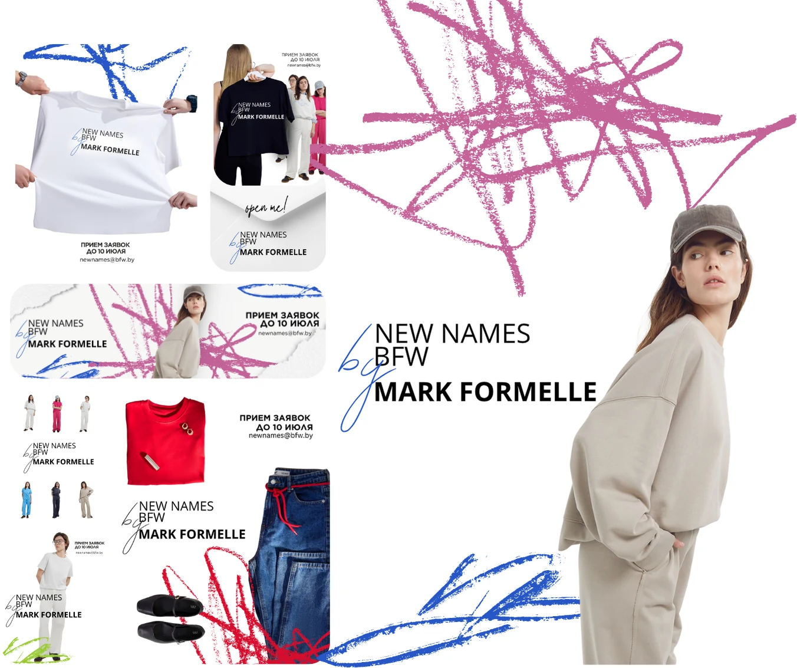
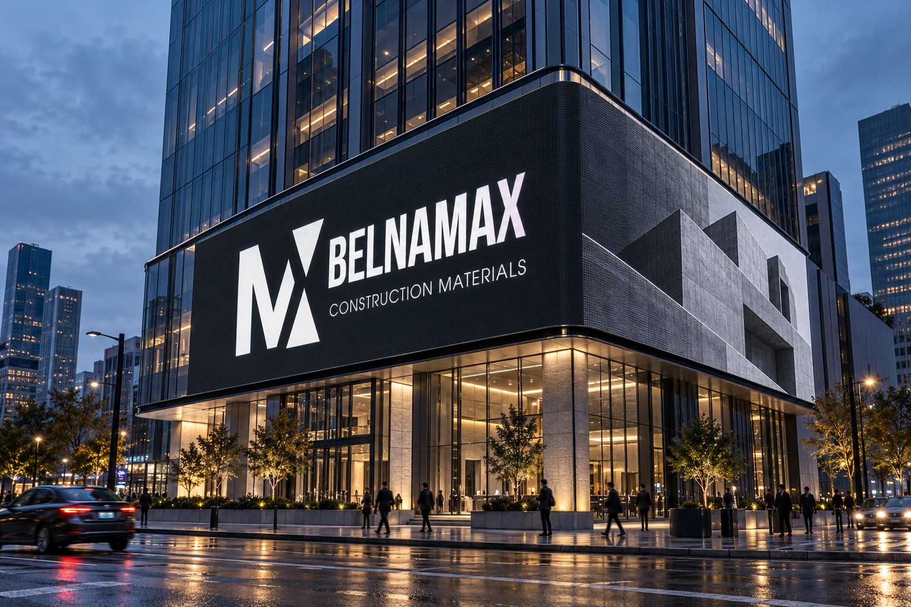
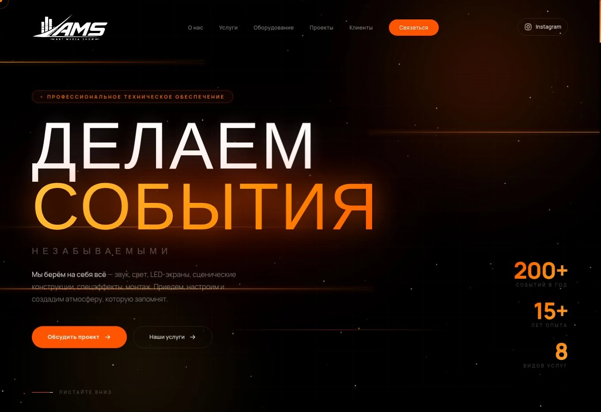

Дизайн, который
запоминается.
Айдентика, digital и сайты. Цельный визуальный образ — от первого экрана до печатных материалов.
Виктория Химич · Graphic & Web Designer
Избранное.
Проекты целиком: идея, визуальный язык
и то, как он работает на разных носителях.

Айдентика · принт · мерч
New Names BFW
× Mark Formelle
Выразительная графика для fashion-проекта. Один визуальный характер — в одежде, мерче и деталях.
Айдентика · показы · соцсети
FOR YOU
Логотип, фирменные носители и визуальные материалы для показов и соцсетей бренда одежды.

Айдентика · реклама · носители
BELNAMAX
Визуальная система строительного бренда: от авторского знака до городской рекламы и маркировки материалов.

Веб-дизайн · разработка
Art Media Show
Сайт для команды технического обеспечения мероприятий: услуги, каталог оборудования, проекты и заявка.

Событие · digital · соцсети
Paris Fashion Week Show
Визуальное оформление fashion-события: ключевой образ, анонсы и серия публикаций для соцсетей.
Нужен похожий формат? Расскажите о своей задаче — обсудим материалы для вашего проекта.
Один характер.
Разные точки контакта.
Я Виктория, графический и веб-дизайнер. Создаю визуальные решения для брендов, мероприятий и digital-проектов.
Собираю отдельные материалы в единую систему: чтобы сайт, афиша, публикация и печатный носитель говорили на одном визуальном языке.
В работе использую Adobe, Figma, motion, AI-инструменты и базовую 3D-графику — в зависимости от задачи.
От задачи к запуску.
Знакомимся с задачей
Обсуждаем аудиторию, нужные форматы, сроки и ориентиры. Определяем, что именно нужно вашему проекту.
Находим визуальный характер
Выбираем направление и развиваем его в систему, которую можно использовать на разных носителях.
Готовим к использованию
Адаптируем дизайн под согласованные форматы — для публикации, печати или запуска сайта.